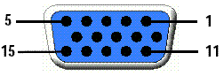
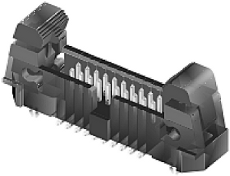

Prober interface for Direct-Probe
There are two connectors for an optional wafer prober interface. One interface is externally accessible (J205), the other one is placed inside the test head (J203).
The signals for the prober interface are connected to both connectors in parallel. The interface provides status information for
- Stiffener detection
- DUT docking
- Hard docking
The status is available as an open collector output.
Signal |
J205 |
J203 |
Type |
Description |
|---|---|---|---|---|
HD |
6 |
10 |
open collector |
Hard docking is active (active low) |
DD |
8 |
16 |
open collector |
DUT docking is active (active low) |
SD |
7 |
12 |
open collector |
Stiffener detected 1) (active low) |
SO |
12 |
14 |
open collector |
Stiffener open 1) (active low) |
| NT | 13 | 13 | open collector | Hard docking is in Neutral (active high) |
CCOM |
5 |
9 |
- |
Common ground for the signals above |
External connector (J205)
The external connector is a female 15 pin HD D-Sub connector (Tyco 3-1734530-3). The pinout is intended to allow to use a standard cable like RS-Components 394-3641 (male-female) or 777-671 (male-male).

Internal connector (J203)
The internal connector is a male 20 pin HD ejector header (pitch 0.05inch or 1.27mm, Samtec EHF-110-01-L-D-SM-LC-XX-P).

Functional changes
- Introduced in SmarTest 6.5.4